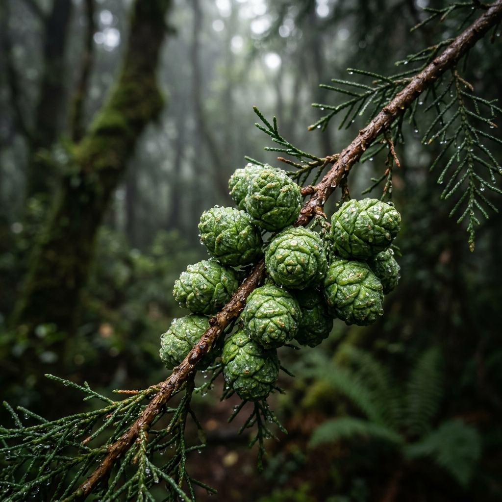

Das alte Geheimnis der Berge: Zypressenzapfen Paste

Tief in den rauen, hochgelegenen Bergregionen Anatoliens wächst ein immergrüner Riese, der Stürmen, Schnee und Hitze gleichermaßen trotzt: Die Zypresse. Schon in der Antike galt dieser Baum als Symbol für Unsterblichkeit und Widerstandskraft. Doch nicht nur das Holz ist wertvoll. Die wahre Kraft des Baumes konzentriert sich in seinen unauffälligen, grünen Zapfen. Die Zypressenzapfen Paste (Kozalak Macunu) ist eines der am besten gehüteten Geheimnisse der traditionellen Naturheilkunde. In diesem umfassenden Magazinartikel erforschen wir die botanischen Eigenschaften, die historische Bedeutung und den aufwendigen Herstellungsprozess dieses faszinierenden Naturprodukts.
Die Mittelmeer-Zypresse (Cupressus sempervirens)
Die immergrüne Zypresse prägt mit ihrer markanten, säulenartigen Silhouette das Landschaftsbild des gesamten Mittelmeerraums. Botanisch gehört sie zur Familie der Zypressengewächse (Cupressaceae). Der Baum kann ein Alter von über tausend Jahren erreichen. Seine tiefe Verwurzelung im kargen Boden und seine Fähigkeit, extremen Dürren zu widerstehen, brachten ihm früh den Ruf eines Lebensbaumes ein.
Für die Herstellung der berühmten Zapfenpaste sind jedoch nicht die reifen, braunen und verholzten Zapfen von Bedeutung, sondern die jungen, noch geschlossenen, harzigen und tiefgrünen Zapfen. Diese werden im späten Frühling oder frühen Sommer gesammelt, wenn sie noch voller Feuchtigkeit und lebenswichtiger Pflanzensäfte sind. In dieser Phase enthalten sie die höchste Konzentration an sekundären Pflanzenstoffen, Harzen und ätherischen Ölen.
Die chemische Zusammensetzung der Zapfen
Moderne phytochemische Analysen haben gezeigt, dass die jungen Zypressenzapfen ein bemerkenswert komplexes Profil an bioaktiven Verbindungen aufweisen. Das aus ihnen gewonnene Extrakt ist extrem reich an ätherischen Ölen. Die Hauptkomponenten dieser Öle sind Monoterpene, insbesondere Alpha-Pinen, Beta-Pinen und Camphen. Diese Terpene verleihen den Zapfen ihren charakteristischen, scharf-harzigen und waldigen Geruch.
Neben den Terpenen sind die Zapfen eine hervorragende Quelle für Polyphenole, Proanthocyanidine und Tannine (Gerbstoffe). Tannine wirken stark adstringierend (zusammenziehend) und schützend auf die Schleimhäute. Diese einzigartige Kombination aus flüchtigen Ölen und schweren Gerbstoffen macht die Zypressenzapfen in der Pflanzenheilkunde so interessant, insbesondere im Zusammenhang mit den Atemwegen und dem Immunsystem. Die Terpene besitzen antimikrobielle Eigenschaften und wirken expektorierend (schleimlösend), während die Polyphenole starke Radikalfänger sind und oxidativen Stress im Körper bekämpfen.
Der traditionelle Herstellungsprozess
Die Herstellung einer hochwertigen Zypressenzapfen Paste ist ein Meisterwerk der traditionellen anatolischen Handwerkskunst. Der Prozess erfordert viel Zeit, Geduld und tiefes Wissen über die Pflanzen.
1. Die Sammlung: Die Ernte der grünen Zapfen erfolgt per Hand in unberührten, schadstofffreien Bergregionen. Die Sammler müssen genau den richtigen Zeitpunkt abpassen - sind die Zapfen zu jung, fehlen die Öle; sind sie zu alt, werden sie holzig und das Harz verflüchtigt sich.
2. Das Einlegen und Kochen: Die frischen Zapfen werden gewaschen und oft zerkleinert, um die Oberfläche zu vergrößern. Anschließend werden sie über viele Stunden (oft 12 bis 24 Stunden) in großen Kupferkesseln auf offenem Holzfeuer in Quellwasser extrem schonend geköchelt. Dieser lange, langsame Prozess ist entscheidend, um die hitzestabilen Harze, Tannine und Mineralien aus dem pflanzlichen Gewebe in das Wasser zu überführen. Das Wasser verfärbt sich dabei tief dunkelrot bis braun und wird zu einem hochkonzentrierten Sud.
3. Die Hochzeit mit Süße und Gewürzen: Der konzentrierte Sud wird gefiltert und mit einer natürlichen Trägersubstanz gebunden. Traditionell verwendet man hierfür hochwertigen Blütenhonig, Johannisbrotmelasse (Keçiboynuzu Pekmezi) oder Traubenmelasse. Diese Süße dient nicht nur dem Geschmack - der ansonsten unerträglich herb und harzig wäre - sondern fungiert als natürliches Konservierungsmittel und Trägerstoff, der die Wirkstoffe schnell ins Blut transportiert. Um die Wirkung zu verstärken, werden oft noch weitere wärmende Gewürze wie Ingwer, Kurkuma, Galgant, Nelke oder Minzextrakt hinzugefügt.
Anwendung und Nutzen in der Volksmedizin
In der anatolischen Kultur ist das Glas mit der dunklen, klebrigen Zapfenpaste ein fester Bestandteil der winterlichen Hausapotheke. Sobald die Temperaturen sinken und die ersten Erkältungswellen anrollen, wird zur Paste gegriffen.
Traditionell wird sie zur Linderung von Hustenreiz, Bronchitis und Heiserkeit eingesetzt. Die ätherischen Öle sollen dabei helfen, die Bronchien zu weiten und festsitzenden Schleim zu lösen, während die adstringierenden Tannine gereizte Rachenschleimhäute beruhigen. Viele Menschen berichten, dass ein Löffel der Paste, der langsam im Mund zergeht, eine sofortige Befreiung der Atemwege bewirkt - ähnlich wie ein starkes Menthol-Bonbon, jedoch auf rein natürlicher Basis.
Darüber hinaus gilt die Paste als allgemeines "Tonikum" für die Lunge und das Immunsystem. Menschen, die in Regionen mit starker Luftverschmutzung leben oder ehemalige Raucher sind, nutzen die Paste oft kurmäßig, um die natürliche Selbstreinigung der Atemwege zu unterstützen.
Fazit: Die Kraft des Waldes im Glas
Die Zypressenzapfen Paste ist ein herausragendes Beispiel dafür, wie indigene Völker die Kräfte der Natur in ihrer rauesten Form gebändigt und nutzbar gemacht haben. Es ist ein Produkt, das nicht im Labor, sondern in den Bergen und an den Feuern anatolischer Dörfer entstanden ist. Wer diese Paste heute konsumiert, verbindet sich mit einer Jahrtausende alten Tradition der Pflanzenheilkunde. Bei Anadoa Naturhaus ehren wir dieses Erbe, indem wir unsere Zapfenpasten nach genau diesen überlieferten, langsamen und respektvollen Methoden herstellen - ganz ohne künstliche Zusätze oder raffinierten Zucker.